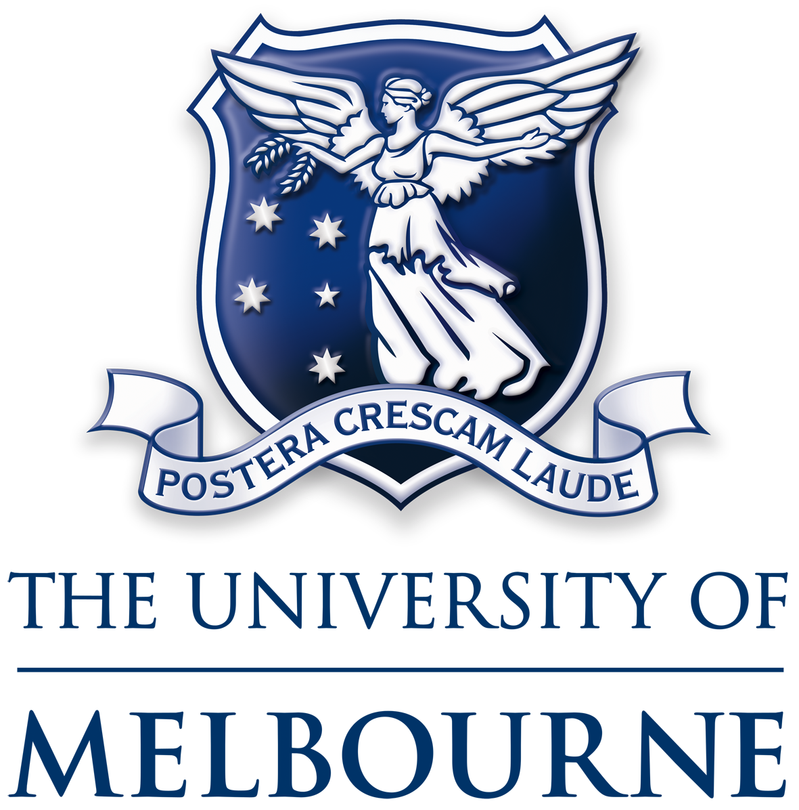

Education

PhD in Engineering (Joint Program)
The University of Melbourne – Melbourne, Australia
Karlsruhe Institute of Technology (KIT) – Karlsruhe, Germany
(2018 – 2022)
- Introduced the novel concept of walk-sharing, a buddy-service to encourage walking in perceived unsafe environments.
- Developed an agent-based simulation using GAMA to test the technical and practical viability of walk-sharing in urban settings.

M.Tech. in Transportation Engineering
Indian Institute of Technology Kharagpur – Kharagpur, India (2015 – 2017)
Identified the risk factors affecting the frequency and severity of crashes at signalised intersections in Kolkata.

B.E. in Civil Engineering
Jadavpur University – Kolkata, India (2010 – 2014)